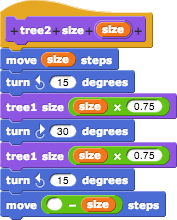
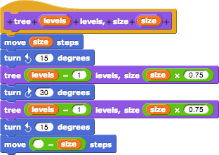
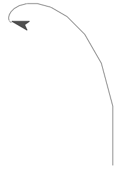
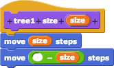
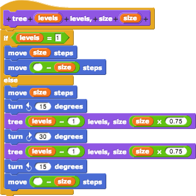
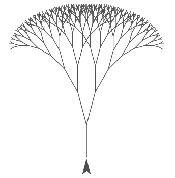

Last time, we tried to generalize this pattern:

by making a single block that took the level number as an input, instead of as part of the block name:

Unfortunately, it did not work:

The sprite draws smaller and smaller left branches, finally just spinning around in one place, without ever drawing a right branch.
What went wrong? The problem is that the original numbered tree scripts aren't all the same. The first one, tree1, is different; it just draws a trunk, without any branches:

So our all-in-one tree block has to do something different from what's now in the script for the case levels=1.

With this change, we can draw trees of any complexity. Here's a level-9 tree:

(Note: the amount of time required to draw the tree goes up very quickly with the number of levels, so we don't recommend trying 100 levels.)
This general code pattern, with a simple base case that doesn't call the block itself, is typical of recursion. (Recursion is the name for a block that calls itself in its script.) There's a base case and a recursive case.